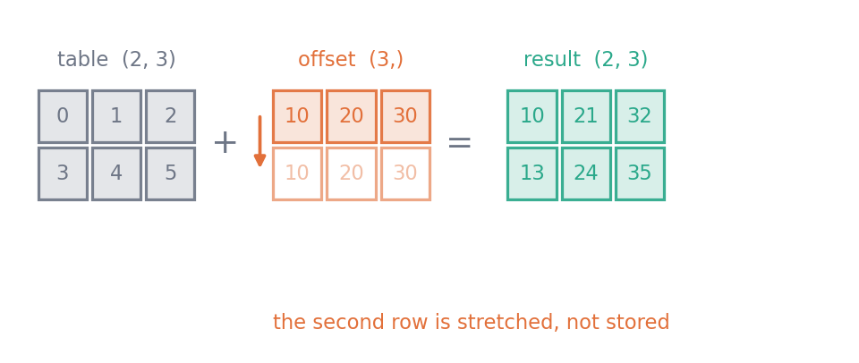
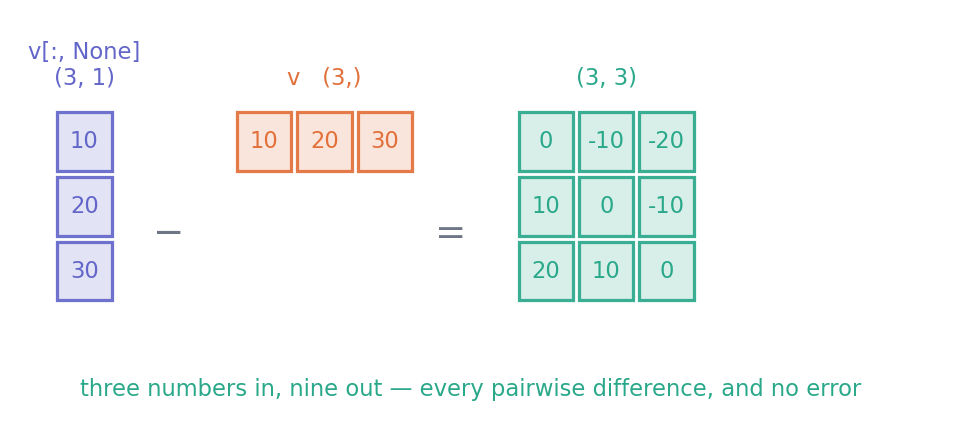
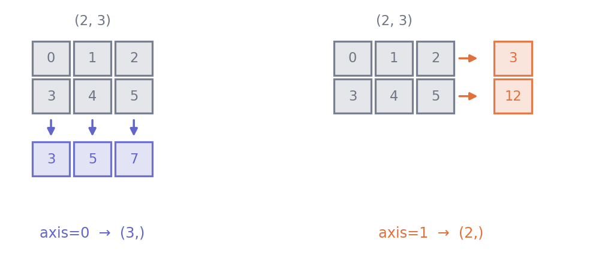

scores = [58.0, 71.5, 64.0, 80.5]
adjusted = []
for score in scores:
adjusted.append(score * 1.1)
print(adjusted)[63.800000000000004, 78.65, 70.4, 88.55000000000001]Python · Unit 7
Why this unit is here
Data science is arithmetic done to whole tables at once. Three ideas make that possible: operations that apply to every element, broadcasting that lets differently-shaped arrays combine, and reductions that collapse an array along one direction.
They are also the three places where beginners most often get a wrong answer rather than an error message. NumPy will happily subtract the wrong thing from the wrong thing and hand you a perfectly shaped result. This unit is as much about noticing that as about the syntax.
You should be able to:
shape, ndim and dtype — P6;for loop over a list — P4.Quick check. What are the shape and ndim of np.zeros((3, 4))?
shape is (3, 4) and ndim is 2 — three rows, four columns, two dimensions. If that was not immediate, reread P6 first; every idea below is expressed in terms of shape.
In plain Python, doing something to every number means writing a loop:
scores = [58.0, 71.5, 64.0, 80.5]
adjusted = []
for score in scores:
adjusted.append(score * 1.1)
print(adjusted)[63.800000000000004, 78.65, 70.4, 88.55000000000001]In NumPy you write the operation once and it applies to everything:
import numpy as np
scores = np.array([58.0, 71.5, 64.0, 80.5])
print(scores * 1.1)[63.8 78.65 70.4 88.55]This is not just shorter. The loop still happens — it happens inside compiled code rather than in the Python interpreter, which for large arrays is dramatically faster. But speed is the lesser reason. The real gain is that scores * 1.1 says what you want, while the loop says how to get it, and the first is much easier to read and much harder to get subtly wrong.
The same applies to comparisons, which produce arrays of True/False:
print(scores > 65)
print(scores[scores > 65])[False True False True]
[71.5 80.5]Two arrays of the same shape combine element by element. Arrays of different shapes may still combine, if their shapes are compatible. NumPy compares them from the right, and two dimensions are compatible when they are equal or one of them is 1.
table = np.arange(6).reshape(2, 3) # shape (2, 3)
offset = np.array([10, 20, 30]) # shape (3,)
print(table)
print(table + offset)[[0 1 2]
[3 4 5]]
[[10 21 32]
[13 24 35]]
(3,) array against a (2, 3) one. NumPy compares the shapes from the right: 3 matches 3, and the absent first dimension is stretched to 2. The hollow row is not stored — it is the same three numbers, reused.
The (3,) array was stretched The (3,) array was stretched across both rows. Nothing was copied in memory — NumPy simply reuses the same values — but the result is as if it had been.
This is concise and it is also where silent errors live. A one-dimensional array of length 3 has shape (3,). The same numbers as a column have shape (3, 1). They do not behave the same way:
v = np.array([10.0, 20.0, 30.0])
print("v.shape ", v.shape)
print("v[:, None].shape ", v[:, None].shape)
print("(v - v).shape ", (v - v).shape)
print("(v[:, None] - v).shape ", (v[:, None] - v).shape, " <-- 3x3, not 3")v.shape (3,)
v[:, None].shape (3, 1)
(v - v).shape (3,)
(v[:, None] - v).shape (3, 3) <-- 3x3, not 3
(3,) and (3, 1) are not interchangeable. Comparing from the right, a column of three against a row of three makes both dimensions stretch, and three numbers become nine. Nothing is raised.
The last line is the trap. The last line is the trap. You asked for differences between 3 numbers and got a \(3 \times 3\) table of all pairwise differences, with no error raised. If a calculation downstream then averages it, you get a number — the wrong number. Print the shape whenever you are unsure.
axisA reduction collapses an array. With no axis it collapses everything to a single value:
table = np.arange(6).reshape(2, 3)
print(table)
print("sum of everything:", table.sum())[[0 1 2]
[3 4 5]]
sum of everything: 15With an axis it collapses only that direction. This is the single most misremembered thing in NumPy, so it is worth stating carefully:
axis=0means collapse the row index. You end up with one result per column.
print("table.sum(axis=0) ->", table.sum(axis=0), " shape", table.sum(axis=0).shape)
print("table.sum(axis=1) ->", table.sum(axis=1), " shape", table.sum(axis=1).shape)table.sum(axis=0) -> [3 5 7] shape (3,)
table.sum(axis=1) -> [ 3 12] shape (2,)
axis=0 collapses the row index and leaves one number per column; over axis=1 it collapses the column index and leaves one per row.
The reliable way to remember it The reliable way to remember it is by shape rather than by words. The table is (2, 3). Reducing over axis=0 removes the first dimension and leaves (3,); reducing over axis=1 removes the second and leaves (2,). The axis you name is the one that disappears.
ddof, and a default that will catch younp.std and np.var divide by \(n\) by default. The sample standard deviation that statistics uses divides by \(n - 1\), which you request with ddof=1:
values = np.array([2.0, 4.0, 4.0, 4.0, 5.0, 5.0, 7.0, 9.0])
print("population (ddof=0):", values.std())
print("sample (ddof=1):", values.std(ddof=1))population (ddof=0): 2.0
sample (ddof=1): 2.138089935299395Neither is wrong; they answer different questions. But NumPy’s default is not the one statistics usually wants, and the gap is largest for exactly the small samples where it matters most. Decide deliberately and say which you used.
Create one generator, near the top of the script, and draw from it repeatedly:
rng = np.random.default_rng(2026)
print(rng.normal(loc=0, scale=1, size=4))
print(rng.integers(low=1, high=7, size=4))[-0.79312248 0.24057128 -1.89632635 1.39577171]
[4 3 5 5]The seed makes the sequence repeatable, which is what lets these notes print the same numbers on your machine as on mine. Do not call np.random.default_rng(2026) again inside a loop: each call restarts the sequence from the same place, so every iteration draws the identical “random” value. (Calling default_rng() with no seed inside a loop does give different values each time — but then nothing is reproducible, which is its own problem.) Create one generator outside the loop and draw from it repeatedly.
* is not @For arrays, * multiplies element by element and @ performs matrix multiplication. They are different questions with different answers:
A = np.array([[1.0, 2.0], [3.0, 4.0]])
print("A * A =\n", A * A)
print("A @ A =\n", A @ A)A * A =
[[ 1. 4.]
[ 9. 16.]]
A @ A =
[[ 7. 10.]
[15. 22.]]If M9 is still ahead of you, take this on trust for now: * is arithmetic on matching positions, @ is the row-times-column operation from linear algebra.
Standardise every numeric column of the cohort table.
Standardising means subtracting each column’s mean and dividing by its standard deviation, so that every column ends up centred at 0 with a spread of 1. It uses reductions and broadcasting together, and it is the single most common preprocessing step in data science.
import pandas as pd
cohort = pd.read_csv("../data/cohort.csv")
columns = ["diagnostic_score", "hours_practice", "final_score"]
raw = cohort[columns].to_numpy()
# Keep only rows that are complete and in range. The cohort file contains a
# deliberate missing value and one impossible score; P9 deals with them
# properly, but arithmetic on a NaN silently poisons everything it touches.
valid = np.isfinite(raw).all(axis=1) & (raw[:, 2] >= 0) & (raw[:, 2] <= 100)
data = raw[valid]
print("kept", valid.sum(), "of", len(raw), "rows; shape", data.shape)kept 238 of 240 rows; shape (238, 3)Now the two lines that matter:
means = data.mean(axis=0) # one per column -> shape (3,)
sds = data.std(axis=0, ddof=1) # one per column -> shape (3,)
standardised = (data - means) / sds
print("column means:", np.round(means, 2))
print("column sds :", np.round(sds, 2))
print("shapes:", data.shape, "-", means.shape, "->", standardised.shape)column means: [62.43 16.42 65.27]
column sds : [17.49 8.14 8.38]
shapes: (238, 3) - (3,) -> (238, 3)Read what happened. data is (238, 3) and means is (3,). Comparing from the right, 3 matches 3, and the missing first dimension is stretched to 238. One mean was subtracted from each column, exactly as intended.
Now check it, rather than assuming:
print("largest remaining mean:", np.abs(standardised.mean(axis=0)).max())
print("standard deviations :", standardised.std(axis=0, ddof=1))largest remaining mean: 2.1593371348696847e-15
standard deviations : [1. 1. 1.]The means are not exactly zero but around \(10^{-15}\), which is floating-point noise rather than a mistake — see P2.
Two mistakes were available here, and only one of them would have announced itself. Using axis=1 would have computed one mean per student, shape (238,), and subtracting that from a (238, 3) array raises a ValueError — 238 against 3 cannot broadcast. That one fails loudly, which is the good case. Forgetting ddof=1 is the quiet one. It divides by a slightly smaller number, so the standardised columns come out with standard deviations of 1.002 rather than 1 — the factor is \(\sqrt{n/(n-1)}\). Nothing raises, the shapes are all correct, and the result looks entirely reasonable. Two lines of checking catch it.
Exercise 1 a has shape (4, 3) and b has shape (3,). What is the shape of a * b? What about a * b[:, None] — and why?
a * b has shape (4, 3). Comparing from the right: 3 against 3 matches, and b’s missing first dimension stretches to 4. Each row of a is multiplied by b.
a * b[:, None] raises an error. b[:, None] has shape (3, 1). Comparing from the right: 1 against 3 is fine (the 1 stretches), but then 3 against 4 is not — neither is 1 and they are unequal.
This one at least fails loudly. The dangerous version is when both dimensions happen to be compatible and you get a silently larger array.
Exercise 2 You have marks with shape (30, 5) — thirty students, five assignments. Write the expression for each student’s average, and the expression for each assignment’s average. State the shape of each result.
Per student, average across the five assignments — collapse the column index:
marks.mean(axis=1) # shape (30,)Per assignment, average across the thirty students — collapse the row index:
marks.mean(axis=0) # shape (5,)Check them by shape rather than by intuition. If you wanted one number per student you should get 30 of them, and only axis=1 does that.
Exercise 3 This is meant to centre each column, but it does not. Find the bug without running it, then say what shape the result has.
data = np.arange(12).reshape(4, 3)
centred = data - data.mean(axis=1)data.mean(axis=1) collapses the column index, giving one mean per row — shape (4,). To centre columns you need one mean per column, axis=0, shape (3,).
Here you are lucky: it raises. Comparing (4, 3) with (4,) from the right, 4 against 3 is neither equal nor 1, so NumPy refuses and you get a ValueError. There is no result shape.
Now change the array to np.arange(16).reshape(4, 4) and the luck runs out. (4, 4) against (4,) broadcasts happily along the last axis, so the value at position [i, j] has the mean of row j subtracted from it — the row means get lined up against columns. That is not row-centring and it is not column-centring; it is nothing at all. You get a plausible (4, 4) array of meaningless numbers.
The fix for centring columns is data - data.mean(axis=0). If you genuinely wanted to centre rows, you need data - data.mean(axis=1, keepdims=True), where keepdims=True gives shape (4, 1) so the means line up against rows.
The lesson: square arrays hide axis errors, so be most careful exactly when the shape looks tidiest.
Two habits are worth building deliberately. The first is asserting the shape you expect, so a broadcast that goes wrong stops the program instead of quietly continuing:
values = np.array([10.0, 20.0, 30.0])
differences = values - values.mean()
assert differences.shape == values.shape, f"expected {values.shape}, got {differences.shape}"
print("shape as expected:", differences.shape)shape as expected: (3,)The second is checking that a transformation did what you claimed. Here is the axis bug from Exercise 3, in the square case where it does not raise:
data = np.arange(16, dtype=float).reshape(4, 4)
wrong = data - data.mean(axis=1) # one mean per row - wrong direction
right = data - data.mean(axis=0) # one mean per column - what we wanted
print("both shapes:", wrong.shape, right.shape)
print("column means after 'wrong':", np.round(wrong.mean(axis=0), 3))
print("column means after 'right':", np.round(right.mean(axis=0), 3))both shapes: (4, 4) (4, 4)
column means after 'wrong': [ 4.5 1.5 -1.5 -4.5]
column means after 'right': [0. 0. 0. 0.]Both produced a (4, 4) array and neither complained. In wrong, the row means were broadcast against columns — the mean of row 1 subtracted from column 1, and so on — which is not a meaningful operation at all. Only the check distinguishes them: after centring columns correctly every column mean must be zero, and in the wrong version they plainly are not.
If you take one thing from this unit, make it that. Predict the shape, then verify the property. It costs one line and it catches the entire class of error that NumPy will not catch for you.
Where this usually goes wrong
axis=0 as “along the rows”axis=0 collapses the row index and gives one result per column. Think in shapes: the axis you name is the one that disappears.
(n,) with (n, 1)ddof at its defaultnp.std divides by \(n\). The sample standard deviation divides by \(n - 1\). Choose on purpose and record which you used.
np.random.default_rng(42) created afresh on each iteration restarts the same sequence, so every “random” draw is identical. Create the generator once, outside the loop, and pass it in.
* when you meant @* multiplies matching positions and @ does matrix multiplication. Both may succeed on the same inputs and return different answers.
nan. Filter first, and be able to say how many rows you dropped and why.
Answers are at the foot of the page.
x has shape (5, 8). What is the shape of x.sum(axis=1)?
(8,) b. (5,) c. (5, 1) d. a single numbera has shape (3, 4) and b has shape (4,). Does a + b work? What about a + b[:, None]?(b) (5,). axis=1 removes the second dimension, leaving one result per row. Option (a) is what axis=0 gives.
a + b works: comparing from the right, 4 matches 4, and the missing dimension stretches to 3. a + b[:, None] has shape (4, 1) against (3, 4); from the right, 1 stretches to 4, but then 4 against 3 fails, so it raises a ValueError.
Because the shapes stay compatible either way. On a (4, 3) array, using the wrong axis usually raises an error; on a (4, 4) array both directions broadcast happily and you get a correctly shaped, wrong answer with no warning.
One of you used ddof=1 and the other did not — 8.37 is the \(n\) divisor and 8.38 the \(n-1\) divisor. Neither is a mistake, but the two answer different questions and the report should say which.
The generator is being created inside the loop with a fixed seed, so the sequence restarts from the same place on every iteration. Move rng = np.random.default_rng(2026) outside the loop. (An unseeded default_rng() inside the loop would not repeat — but it would also not be reproducible, so the fix is the same.)